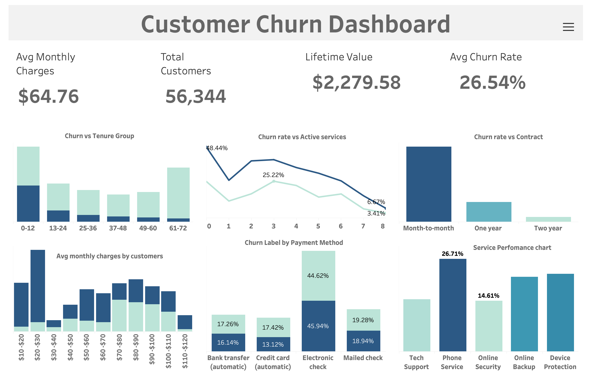

Projects

GitHub
Customer Churn Dashboard
This end-to-end Customer Churn Analysis project uses Python, SQL, and Tableau to clean data, engineer features, and uncover the strongest drivers of customer churn. Through exploratory analysis and interactive dashboards, the project identifies key patterns across contract types, tenure, payment methods, monthly charges, and service engagement—delivering clear, actionable insights to help reduce churn and improve customer retention. It reflects a real business analytics workflow, transforming raw telecom data into meaningful recommendations for decision-makers.

US Car Sales Analysis
Processed 500k rows of car sales data using Python and SQL, created an ETL pipeline, and designed an interactive Tableau dashboard with key insights.

SQL Data Analytics
Built a data warehouse using the Bronze-Silver-Gold ETL architecture and created detailed reports through SQL-based analytics and transformations.

Sales & Customer Dashboard
Built an interactive dashboard using Tableau to monitor sales trends, customer insights, and KPIs to improve marketing and operations.
 Gmail
Gmail
 LinkedIn
LinkedIn
 GitHub
GitHub